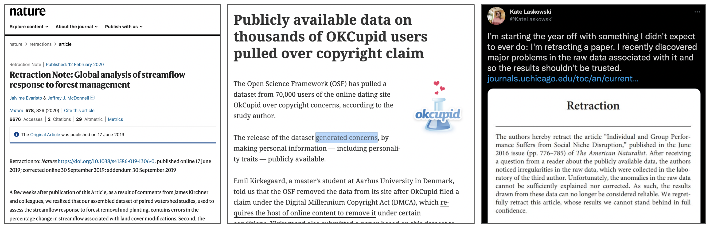

6.1 Developing a Code of Conduct
Whether you are joining a lab group or establishing a new collaboration, articulating a set of shared agreements about how people in the group will treat each other will help create the conditions for successful collaboration. If agreements or a code of conduct do not yet exist, invite a conversation among all members to create them. Co-creation of a code of conduct will foster collaboration and engagement as a process in and of itself, and is important to ensure all voices heard such that your code of conduct represents the perspectives of your community. If a code of conduct already exists, and your community will be a long-acting collaboration, you might consider revising the code of conduct. Having your group ‘sign off’ on the code of conduct, whether revised or not, supports adoption of the principles.
When creating a code of conduct, consider both the behaviors you want to encourage and those that will not be tolerated. For example, the Openscapes code of conduct includes Be respectful, honest, inclusive, accommodating, appreciative, and open to learning from everyone else. Do not attack, demean, disrupt, harass, or threaten others or encourage such behavior.
Below are other example codes of conduct:
6.2 Authorship and Credit Policies

Navigating issues of intellectual property and credit can be a challenge, particularly for early career researchers. Open communication is critical to avoiding misunderstandings and conflicts. Talk to your coauthors and collaborators about authorship, credit, and data sharing early and often. This is particularly important when working with new collaborators and across lab groups or disciplines which may have divergent views on authorship and data sharing. If you feel uncomfortable talking about issues surrounding credit or intellectual property, seek the advice or assistance of a mentor to support you in having these important conversations.
The “Publication” section of the Ecological Society of America’s Code of Ethics is a useful starting point for discussions about co-authorship, as are the International Committee of Medical Journal Editors guidelines for authorship and contribution. You should also check guidelines published by the journal(s) to which you anticipate submitting your work.
For collaborative research projects, develop an authorship agreement for your group early in the project and refer to it for each product. This example authorship agreement from the Arctic Data Center provides a useful template. It builds from information contained within Weltzin et al (2006) and provides a rubric for inclusion of individuals as authors. Your collaborative team may not choose to adopt the agreement in the current form, however it will prompt thought and discussion in advance of developing a consensus. Some key questions to consider as you are working with your team to develop the agreement:
What roles do we anticipate contributors will play? e.g., the NISO Contributor Roles Taxonomy (CRediT) identifies 14 distinct roles:
- Conceptualization
- Data curation
- Formal Analysis
- Funding acquisition
- Investigation
- Methodology
- Project administration
- Resources
- Software
- Supervision
- Validation
- Visualization
- Writing – original draft
- Writing – review & editing
What are our criteria for authorship? (See the ICMJE guidelines for potential criteria)
Will we extend the opportunity for authorship to all group members on every paper or product?
Do we want to have an opt in or opt out policy? (In an opt out policy, all group members are considered authors from the outset and must request removal from the paper if they don’t want think they meet the criteria for authorship)
Who has the authority to make decisions about authorship? Lead author? PI? Group?
How will we decide authorship order?
In what other ways will we acknowledge contributions and extend credit to collaborators?
How will we resolve conflicts if they arise?
6.3 Data Sharing and Reuse Policies
As with authorship agreements, it is valuable to establish a shared agreement around handling of data when embarking on collaborative projects. Data collected as part of a funded research activity will typically have been managed as part of the Data Management Plan (DMP) associated with that project. However, collaborative research brings together data from across research projects with different data management plans and can include publicly accessible data from repositories where no management plan is available. For these reasons, a discussion and agreement around the handling of data brought into and resulting from the collaboration is warranted and management of this new data may benefit from going through a data management planning process. Below we discuss example data agreements.
The example data policy template provided by the Arctic Data Center addresses three categories of data.
- Individual data not in the public domain
- Individual data with public access
- Derived data resulting from the project
For the first category, the agreement considers conditions under which those data may be used and permissions associated with use. It also addresses access and sharing. In the case of individual, publicly accessible data, the agreement stipulates that the team will abide by the attribution and usage policies that the data were published under, noting how those requirements we met. In the case of derived data, the agreement reads similar to a DMP with consideration of making the data public; management, documentation and archiving; pre-publication sharing; and public sharing and attribution. As research data objects receive a persistent identifier (PID), often a DOI, there are citable objects and consideration should be given to authorship of data, as with articles.
The following example lab policy from the Wolkovich Lab combines data management practices with authorship guidelines and data sharing agreements. It provides a lot of detail about how this lab approaches data use, attribution and authorship. For example:
6.3.0.1 Policy Preview
This policy is communicated with all incoming lab members, from undergraduate to postdocs and visiting scholars, and is shared here with permission from Dr Elizabeth Wolkovich.
6.3.1 Community Principles: CARE and FAIR
The CARE and FAIR Principles were introduced previously in the context of introducing the Arctic Data Center and our data submission and documentation process. In this section we will dive a little deeper.
To recap, the Arctic Data Center is an openly-accessible data repository and the data published through the repository is open for anyone to reuse, subject to conditions of the license (at the Arctic Data Center, data is released under one of two licenses: CC-0 Public Domain and CC-By Attribution 4.0). In facilitating use of data resources, the data stewardship community have converged on principles surrounding best practices for open data management One set of these principles is the FAIR principles. FAIR stands for Findable, Accessible, Interoperable, and Reproducible.

The “Fostering FAIR Data Practices in Europe” project found that it is more monetarily and timely expensive when FAIR principles are not used, and it was estimated that 10.2 billion dollars per years are spent through “storage and license costs to more qualitative costs related to the time spent by researchers on creation, collection and management of data, and the risks of research duplication.” FAIR principles and open science are overlapping concepts, but are distinctive concepts. Open science supports a culture of sharing research outputs and data, and FAIR focuses on how to prepare the data.

Another set of community developed principles surrounding open data are the CARE Principles. The CARE principles for Indigenous Data Governance complement the more data-centric approach of the FAIR principles, introducing social responsibility to open data management practices. The CARE Principles stand for:
- Collective Benefit - Data ecosystems shall be designed and function in ways that enable Indigenous Peoples to derive benefit from the data
- Authority to Control - Indigenous Peoples’ rights and interests in Indigenous data must be recognised and their authority to control such data be empowered. Indigenous data governance enables Indigenous Peoples and governing bodies to determine how Indigenous Peoples, as well as Indigenous lands, territories, resources, knowledges and geographical indicators, are represented and identified within data.
- Responsibility - Those working with Indigenous data have a responsibility to share how those data are used to support Indigenous Peoples’ self-determination and collective benefit. Accountability requires meaningful and openly available evidence of these efforts and the benefits accruing to Indigenous Peoples.
- Ethics - Indigenous Peoples’ rights and wellbeing should be the primary concern at all stages of the data life cycle and across the data ecosystem.
The CARE principles align with the FAIR principles by outlining guidelines for publishing data that is findable, accessible, interoperable, and reproducible while at the same time, accounts for Indigenous’ Peoples rights and interests. Initially designed to support Indigenous data sovereignty, CARE principles are now being adopted across domains, and many researchers argue they are relevant for both Indigenous Knowledge and data, as well as data from all disciplines (Carroll et al., 2021). These principles introduce a “game changing perspective” that encourages transparency in data ethics, and encourages data reuse that is purposeful and intentional that aligns with human well-being aligns with human well-being (Carroll et al., 2021).
6.4 Research Data Publishing Ethics
For over 20 years, the Committee on Publication Ethics (COPE) has provided trusted guidance on ethical practices for scholarly publishing. The COPE guidelines have been broadly adopted by academic publishers across disciplines, and represent a common approach to identify, classify, and adjudicate potential breaches of ethics in publication such as authorship conflicts, peer review manipulation, and falsified findings, among many other areas. Despite these guidelines, there has been a lack of ethics standards, guidelines, or recommendations for data publications, even while some groups have begun to evaluate and act upon reported issues in data publication ethics.

To address this gap, the Force 11 Working Group on Research Data Publishing Ethics was formed as a collaboration among research data professionals and the Committee on Publication Ethics (COPE) “to develop industry-leading guidance and recommended best practices to support repositories, journal publishers, and institutions in handling the ethical responsibilities associated with publishing research data.” The group released the “Joint FORCE11 & COPE Research Data Publishing Ethics Working Group Recommendations” (Puebla, Lowenberg, and WG 2021), which outlines recommendations for four categories of potential data ethics issues:

- Authorship and Contribution Conflicts
- Authorship omissions
- Authorship ordering changes / conflicts
- Institutional investigation of author finds misconduct
- Legal/regulatory restrictions
- Copyright violation
- Insufficient rights for deposit
- Breaches of national privacy laws (GPDR, CCPA)
- Breaches of biosafety and biosecurity protocols
- Breaches of contract law governing data redistribution
- Risks of publication or release
- Risks to human subjects
- Lack of consent
- Breaches of himan rights
- Release of personally identifiable information (PII)
- Risks to species, ecosystems, historical sites
- Locations of endangered species or historical sites
- Risks to communities or societies
- Data harvested for profit or surveillance
- Breaches of data sovereignty
- Risks to human subjects
- Rigor of published data
- Unintentional errors in collection, calculation, display
- Un-interpretable data due to lack of adequate documentation
- Errors of of study design and inference
- Data manipulation or fabrication
Guidelines cover what actions need to be taken, depending on whether the data are already published or not, as well as who should be involved in decisions, who should be notified of actions, and when the public should be notified. The group has also published templates for use by publishers and repositories to announce the extent to which they plan to conform to the data ethics guidelines.
Discussion: Data publishing policies
At the Arctic Data Center, we need to develop policies and procedures governing how we react to potential breaches of data publication ethics. In this exercise, break into groups to provide advice on how the Arctic Data Center should respond to reports of data ethics issues, and whether we should adopt the Joint FORCE11 & COPE Research Data Publishing Ethics Working Group Policy Templates for repositories. In your discussion, consider:
- Should the repository adopt the repository policy templates from Force11?
- Who should be involved in evaluation of the merits of ethical cases reported to ADC?
- Who should be involved in deciding the actions to take?
- What are the range of responses that the repository should consider for ethical breaches?
- Who should be notified when a determination has been made that a breach has occurred?
You might consider a hypothetical scenario such as the following in considering your response.
The data coordinator at the Arctic Data Center receives an email in 2022 from a prior postdoctoral fellow who was employed as part of an NSF-funded project on microbial diversity in Alaskan tundra ecosystems. The email states that a dataset from 2014 in the Arctic Data Center was published with the project PI as author, but omits two people, the postdoc and an undergraduate student, as co-authors on the dataset. The PI retired in 2019, and the postdoc asks that they be added to the author list of the dataset to correct the historical record and provide credit.
6.5 Extra Reading
- Cheruvelil, K. S., Soranno, P. A., Weathers, K. C., Hanson, P. C., Goring, S. J., Filstrup, C. T., & Read, E. K. (2014). Creating and maintaining high-performing collaborative research teams: The importance of diversity and interpersonal skills. Frontiers in Ecology and the Environment, 12(1), 31-38. DOI: 10.1890/130001
- Carroll, S. R., Garba, I., Figueroa-Rodríguez, O. L., Holbrook, J., Lovett, R., Materechera, S., … Hudson, M. (2020). The CARE Principles for Indigenous Data Governance. Data Science Journal, 19(1), 43. DOI: http://doi.org/10.5334/dsj-2020-043